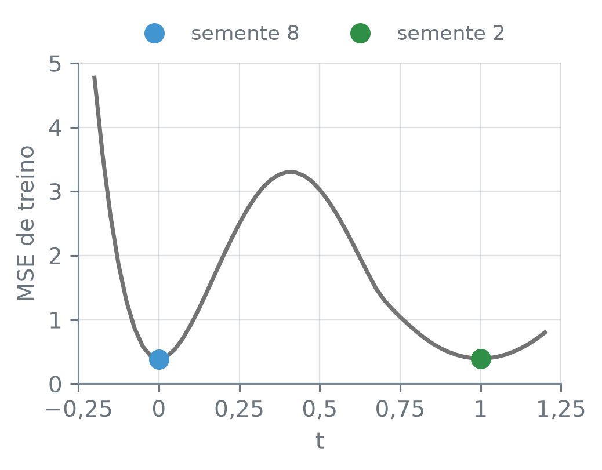
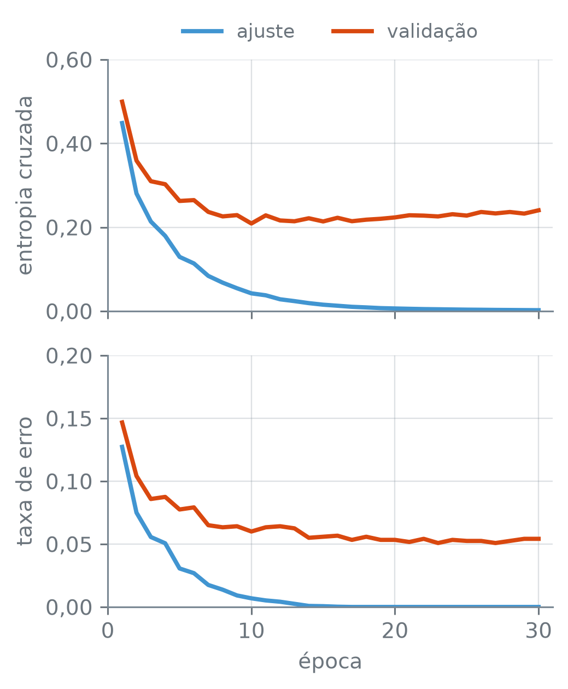
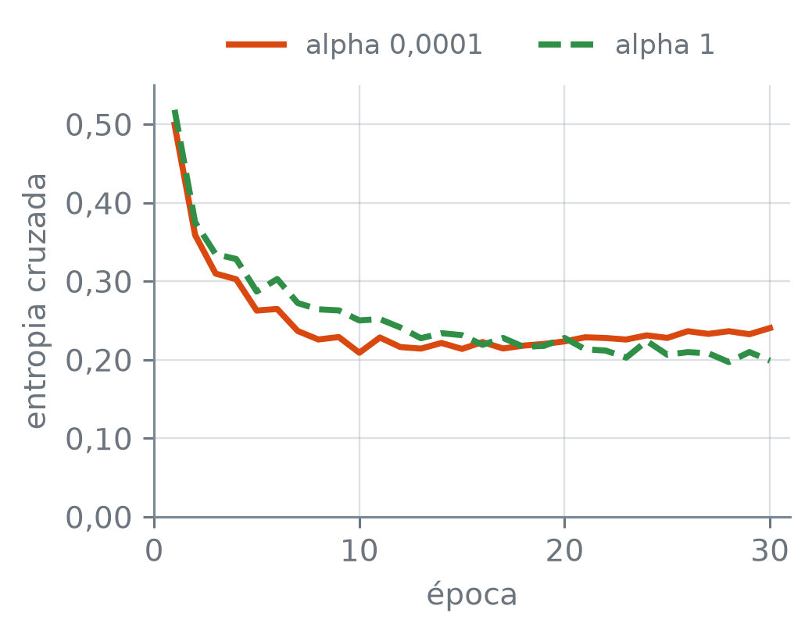

numero_br = lambda valor, casas=2: (
f"{valor:,.{casas}f}".replace(",", "_").replace(".", ",").replace("_", ".")
.replace("-", "−")
)Ajustando uma Rede: Retropropagação, Gradiente Estocástico e Regularização
Nota
Esta seção corresponde à seção 10.7 de James et al. (2023).
Uma rede de cinco unidades ReLU liga os anos de carreira ao log do salário dos jogadores de beisebol, e o ajuste dela começa por pesos sorteados. Se o sorteio muda, sai a mesma curva? Se o ajuste pode terminar em lugares diferentes conforme o ponto de partida, como ele anda de um ponto a outro, e quando deve parar?
A função numero_br escreve os números com a pontuação brasileira:
Um problema com vários mínimos
O código abaixo lê os jogadores com salário e ajusta a mesma rede, cinco unidades ReLU sobre os anos padronizados, com o mesmo método de busca dos pesos, solver="lbfgs", dez vezes. Só muda a semente (random_state de 0 a 9), e com ela os pesos sorteados no começo. Para cada ajuste, imprime o MSE de treino e confere se o lbfgs parou antes do limite de 5.000 iterações, isto é, porque o MSE deixou de cair e não porque as iterações acabaram:
hitters = pd.read_csv("dados/Hitters.csv").dropna()
print("jogadores:", len(hitters))
y = np.log(hitters["salario"])
X = hitters[["anos"]]
grade = pd.DataFrame({"anos": np.linspace(1, 24, 300)})
mse, curvas, redes, iteracoes = {}, {}, {}, {}
for semente in range(10):
rede = make_pipeline(
StandardScaler(),
MLPRegressor(hidden_layer_sizes=(5,), solver="lbfgs",
max_iter=5000, random_state=semente))
rede.fit(X, y)
mse[semente] = mean_squared_error(y, rede.predict(X))
curvas[semente] = rede.predict(grade)
redes[semente] = rede
iteracoes[semente] = rede[-1].n_iter_
mse = pd.Series(mse).round(4)
for semente, valor in mse.items():
print(f"semente {semente}: MSE {numero_br(valor, 4)}")
print("valores distintos:", mse.nunique())
print("de", numero_br(mse.min(), 4), "a", numero_br(mse.max(), 4))
comum = mse.value_counts()
print("o mais repetido:", numero_br(comum.index[0], 4),
f"({comum.iloc[0]} sementes)")
print("todas pararam antes de 5.000:",
max(iteracoes.values()) < 5000)jogadores: 263
semente 0: MSE 0,3953
semente 1: MSE 0,3928
semente 2: MSE 0,3958
semente 3: MSE 0,3953
semente 4: MSE 0,3885
semente 5: MSE 0,3946
semente 6: MSE 0,3953
semente 7: MSE 0,3953
semente 8: MSE 0,3868
semente 9: MSE 0,3953
valores distintos: 6
de 0,3868 a 0,3958
o mais repetido: 0,3953 (5 sementes)
todas pararam antes de 5.000: Trueserie.round(4) — cada valor arredondado a quatro casas. serie.nunique() — quantos valores diferentes a série tem. Em comum.index[0] e comum.iloc[0], o resultado de value_counts() vem do valor mais frequente para o menos frequente: o primeiro rótulo é o MSE mais repetido, e o primeiro valor, quantas sementes chegaram a ele. Com solver="lbfgs", .n_iter_ conta as iterações do método, e não épocas.
Os 263 jogadores e as dez sementes dão seis valores diferentes de MSE de treino, de 0,3868 a 0,3958. O mais repetido, 0,3953, sai de cinco sementes. Nenhum ajuste esgotou as 5.000 iterações: todos pararam porque o MSE deixou de cair. Como a rede e os dados não mudam, a diferença vem só do ponto de partida. A figura mostra três das curvas: a da semente de menor MSE, a da primeira semente com o MSE mais repetido, e a da semente de maior MSE.
repetida = mse.index[mse == comum.index[0]][0]
escolhidas = [mse.idxmin(), repetida, mse.idxmax()]
tres_anos = pd.DataFrame({"anos": [1, 9, 24]})
nove = grade["anos"] >= 9
for semente in escolhidas:
f = redes[semente].predict(tres_anos)
print(f"semente {semente}, f̂ em 1, 9, 24 anos:")
print(" ", " · ".join(numero_br(v) for v in f))
variacao = np.ptp(curvas[semente][nove])
print(" variação de 9 a 24:", numero_br(variacao))
rng = np.random.default_rng(14)
tremor = rng.uniform(-0.25, 0.25, size=len(X))
fig, (ax, ax_z) = plt.subplots(2, 1, figsize=(3.8, 5.0))
ax.scatter(X["anos"] + tremor, y, s=10, color="0.45", alpha=0.4,
linewidths=0)
for semente, cor, traco in zip(escolhidas, ["C0", "C1", "C2"],
["-", "-", "--"]):
for eixo in (ax, ax_z):
eixo.plot(grade["anos"], curvas[semente], color=cor,
linestyle=traco, linewidth=1.8,
label=f"semente {semente}")
ax.set_xlim(0, 25)
ax_z.set_xlim(9, 24)
ax_z.set_ylim(6.2, 6.6)
for eixo in (ax, ax_z):
eixo.set_xlabel("anos de carreira")
eixo.set_ylabel("log do salário")
eixo.yaxis.set_major_formatter(lambda v, _: f"{v:g}".replace(".", ","))
ax.legend(loc="lower center", bbox_to_anchor=(0.5, 1.0), ncol=3,
handlelength=1.5, columnspacing=1)
plt.tight_layout()
plt.show()semente 8, f̂ em 1, 9, 24 anos:
4,71 · 6,47 · 6,32
variação de 9 a 24: 0,15
semente 0, f̂ em 1, 9, 24 anos:
4,56 · 6,46 · 6,34
variação de 9 a 24: 0,12
semente 2, f̂ em 1, 9, 24 anos:
4,56 · 6,44 · 6,44
variação de 9 a 24: 0,00
np.ptp(v) — a diferença entre o maior e o menor valor de v. " · ".join(textos) — junta os textos numa linha só, separados por ” · “. Em ax.legend, handlelength e columnspacing encurtam o traço de amostra e o espaço entre as colunas da legenda, para ela caber na largura da figura.
A semente 8, a de menor MSE, começa mais alta: prevê 4,71 para um jogador de 1 ano, contra 4,56 das outras duas. A semente 2, a de maior MSE, fica horizontal, em 6,44: dos 9 aos 24 anos, a variação impressa é 0,00. As outras duas terminam, aos 24 anos, abaixo do valor que tinham aos 9: a semente 8 vai de 6,47 a 6,32, e a semente 0, de 6,46 a 6,34. São três funções diferentes, com MSE de treino próximos.
Por que o ajuste não chega sempre ao mesmo lugar? Junte todos os pesos da rede, os \(w\) e os \(\beta\), num vetor só, \(\theta\). O ajuste procura o \(\theta\) que torna pequeno \[ R(\theta) = \frac12 \sum_{i=1}^{n} \big(y_i - f_\theta(x_i)\big)^2, \] a metade do RSS, com \(f_\theta\) a rede com os pesos \(\theta\). O fator \(\tfrac12\) não muda onde fica o mínimo e deixa as derivadas mais limpas. Na regressão linear, \(R\) é uma tigela, com um único fundo. Na rede, os pesos entram uns dentro dos outros, \(\beta_k\) multiplicando \(g\) de uma combinação dos \(w_{kj}\), e \(R(\theta)\) pode ter vários vales. Um exemplo simples: trocar de lugar duas unidades, com os seus pesos, dá a mesma função com outro \(\theta\), e então um mesmo fundo aparece em vários pontos. E há vales de fundos diferentes, como sugerem os seis valores de MSE.
Uma função é convexa quando tem a forma de uma tigela, como a \(R\) da regressão linear: o segmento de reta entre dois pontos quaisquer do gráfico nunca passa por baixo dele, e o fundo é um só. A \(R(\theta)\) de uma rede é não convexa: pode ter vários vales. O fundo de um vale, um ponto em que nenhum passo pequeno diminui \(R\), é um mínimo local; o mais baixo de todos é o mínimo global. O ajuste de uma rede anda a partir de um ponto sorteado e tende a parar no fundo do vale em que caiu, que depende do ponto de partida e não precisa ser o global.
Não dá para desenhar \(R(\theta)\) inteira, com um eixo por peso, mas dá para andar por ela em linha reta. O MSE de treino é \(R\) vezes \(2/n\) e tem os mesmos vales. O código abaixo toma os pesos ajustados de duas sementes, a de menor e a de maior MSE, \(\theta_a\) e \(\theta_b\), e mede o MSE de treino nos pesos \[ \theta(t) = (1 - t)\,\theta_a + t\,\theta_b, \] com \(t\) de \(-0{,}2\) a \(1{,}2\): em \(t = 0\) ficam os pesos da primeira semente, em \(t = 1\) os da segunda, e entre os dois, uma mistura deles. A rede não é ajustada de novo; só os pesos dela são trocados antes de cada previsão:
s_a, s_b = escolhidas[0], escolhidas[-1]
rede_a, rede_b = redes[s_a][-1], redes[s_b][-1]
print("pesos da rede:", sum(W.size for W in rede_a.coefs_)
+ sum(v.size for v in rede_a.intercepts_))
mistura = copy.deepcopy(redes[s_a])
ts = np.linspace(-0.2, 1.2, 57).round(3)
caminho = []
for t in ts:
mistura[-1].coefs_ = [(1 - t) * A + t * B for A, B
in zip(rede_a.coefs_, rede_b.coefs_)]
mistura[-1].intercepts_ = [(1 - t) * A + t * B for A, B
in zip(rede_a.intercepts_,
rede_b.intercepts_)]
caminho.append(mean_squared_error(y, mistura.predict(X)))
caminho = pd.Series(caminho, index=ts)
print(f"t = 0 (semente {s_a}):", numero_br(caminho[0.0], 4))
print(f"t = 1 (semente {s_b}):", numero_br(caminho[1.0], 4))
entre = caminho[(ts > 0) & (ts < 1)]
print("maior MSE entre 0 e 1:", numero_br(entre.max(), 1))
print(" em t =", numero_br(entre.idxmax(), 2))
passo = 0.025
fundos = all(caminho[round(c + d, 3)] > caminho[c]
for c in (0.0, 1.0) for d in (-passo, passo))
print("sobe dos dois lados de 0 e de 1:", fundos)
fig, ax = plt.subplots(figsize=(3.8, 3.0))
ax.plot(caminho.index, caminho, color="0.45", linewidth=1.8)
for t, semente, cor in [(0.0, s_a, "C0"), (1.0, s_b, "C2")]:
ax.plot(t, caminho[t], "o", color=cor, markersize=8,
label=f"semente {semente}")
ax.set_xlim(-0.25, 1.25)
ax.set_xlabel("t")
ax.set_ylabel("MSE de treino")
ax.set_ylim(bottom=0)
for eixo in (ax.xaxis, ax.yaxis):
eixo.set_major_formatter(lambda v, _: f"{v:g}".replace(".", ",")
.replace("-", "−"))
ax.legend(loc="lower center", bbox_to_anchor=(0.5, 1.0), ncol=2)
plt.tight_layout()
plt.show()pesos da rede: 16
t = 0 (semente 8): 0,3868
t = 1 (semente 2): 0,3958
maior MSE entre 0 e 1: 3,3
em t = 0,40
sobe dos dois lados de 0 e de 1: True
copy.deepcopy(objeto) — uma cópia independente, com os pesos ajustados junto, para que trocar coefs_ e intercepts_ da cópia mude o que o predict dela calcula sem mexer na rede original. .round(3) num vetor do numpy — arredonda a três casas, para que 0 e 1 fiquem exatos na grade de \(t\).
Em \(t = 0\) e \(t = 1\), o MSE é o das duas sementes, 0,3868 e 0,3958. Entre elas, o caminho sobe até cerca de 3,3, perto de \(t = 0{,}4\), e, a partir de cada extremo, o MSE sobe para os dois lados: em linha reta, não se passa de uma semente à outra sem subir um morro. Isso sozinho não separa os vales. A linha reta é só um caminho entre muitos, e entre duas cópias do mesmo fundo, com as unidades trocadas de lugar, ela também pode subir. O que mostra que as duas sementes pararam em fundos diferentes são os dois MSE, 0,3868 e 0,3958, e as curvas diferentes da figura anterior.
Gradiente descendente e retropropagação
O ajuste anda pelos vales com o gradiente descendente do capítulo 5: a partir de um ponto, calcula para onde \(R\) sobe mais depressa e dá um passo pequeno no sentido contrário. Uma derivada parcial mede quanto \(R\) muda quando só um peso muda um pouco, com todos os outros parados. O gradiente de \(R\) no ponto \(\theta^m\) é o vetor de todas as derivadas parciais, uma por peso, calculadas no ponto atual: \[ \nabla R(\theta^m) = \frac{\partial R(\theta)}{\partial \theta}\bigg|_{\theta = \theta^m}. \] O passo é \[ \theta^{m+1} \leftarrow \theta^m - \rho\, \nabla R(\theta^m), \] em que \(\rho\) é a taxa de aprendizado, o tamanho do passo. Com \(\rho\) pequeno o bastante, cada passo não aumenta \(R\); com \(\rho\) grande demais, os passos pulam o fundo do vale, como no capítulo 5. O processo repete até \(R\) parar de cair.
\(R\) é uma soma de parcelas, uma por jogador, e o gradiente de uma soma é a soma dos gradientes. Para a rede de uma camada, escreva \(z_{ik} = w_{k0} + \sum_j w_{kj} x_{ij}\), a entrada da unidade \(k\) no jogador \(i\). A previsão para ele é \[ f_\theta(x_i) = \beta_0 + \sum_{k=1}^{K} \beta_k\, g(z_{ik}), \] e a parcela dele em \(R\) é \[ R_i(\theta) = \frac12 \big(y_i - f_\theta(x_i)\big)^2. \]
Comece pelas derivadas parciais de \(R_i\) em relação aos pesos da saída, os \(\beta_k\), que multiplicam \(g(z_{ik})\) diretamente. A regra da cadeia dá \[ \frac{\partial R_i}{\partial \beta_k} = -\big(y_i - f_\theta(x_i)\big)\, g(z_{ik}): \] o resíduo do jogador \(i\), com o sinal trocado, vezes a ativação da unidade \(k\). A unidade que ativa mais nesse jogador recebe uma parte maior do resíduo.
O código abaixo faz essa conta para o segundo jogador da tabela, na rede da semente de menor MSE: a previsão, o resíduo e, para cada unidade \(k\), a ativação \(g(z_{ik})\), calculada com os pesos de coefs_ e intercepts_, e a derivada \(\partial R_i / \partial \beta_k\):
ajustada = redes[s_a]
jogador = X.iloc[[1]]
print("anos de carreira:", jogador["anos"].iloc[0])
f_i = ajustada.predict(jogador)[0]
residuo = y.iloc[1] - f_i
print("y:", numero_br(y.iloc[1], 3), "· f̂:", numero_br(f_i, 3))
print("resíduo:", numero_br(residuo))
W, v = ajustada[-1].coefs_, ajustada[-1].intercepts_
z = ajustada[0].transform(jogador) @ W[0] + v[0]
g_z = np.maximum(0, z).ravel()
print("confere com o predict:",
np.isclose(g_z @ W[1].ravel() + v[1][0], f_i))
derivadas = pd.DataFrame(
{"g(z)": g_z, "derivada": -residuo * g_z + 0.0},
index=[f"unidade {k}" for k in range(1, 6)])
print(derivadas.map(numero_br).to_string())anos de carreira: 3
y: 6,174 · f̂: 5,037
resíduo: 1,14
confere com o predict: True
g(z) derivada
unidade 1 0,00 0,00
unidade 2 0,00 0,00
unidade 3 0,00 0,00
unidade 4 0,60 −0,68
unidade 5 0,94 −1,07ajustada[0].transform(jogador) — aplica ao jogador a padronização do primeiro passo do pipeline, a mesma que o predict aplica antes da rede. z @ W[0] — multiplica a linha do jogador pela tabela de pesos das entradas: uma soma \(\sum_j w_{kj} x_{ij}\) por unidade. np.isclose(a, b) — True se os dois números são iguais a menos de uma diferença muito pequena. + 0.0 — transforma em 0.0 o -0.0 que sai de multiplicar zero por um número negativo, para a tabela não imprimir “−0,00”.
O jogador tem 3 anos de carreira e log do salário 6,174; a rede prevê 5,037, e o resíduo, 6,174 − 5,037 = 1,137 (1,14 na saída, com duas casas), é positivo: a previsão ficou abaixo. As unidades 1 a 3 têm ativação 0 para ele, e a derivada em relação aos \(\beta_k\) delas é 0. As unidades 4 e 5 ativam, com 0,60 e 0,94, e as derivadas são −0,68 e −1,07, negativas. O passo anda contra o gradiente: por conta deste jogador, \(\beta_4\) e \(\beta_5\) aumentam, o \(\beta_5\) mais que o \(\beta_4\), e a previsão para ele sobe na direção do valor observado.
Os pesos das unidades, os \(w_{kj}\), estão um elo mais para dentro: mudar \(w_{kj}\) muda \(z_{ik}\), que muda \(g(z_{ik})\), que, multiplicado por \(\beta_k\), muda a previsão. A cadeia ganha esses elos: \[ \begin{aligned} \frac{\partial R_i}{\partial w_{kj}} = {}&-\big(y_i - f_\theta(x_i)\big)\\ &\cdot \beta_k\, g'(z_{ik})\, x_{ij}. \end{aligned} \] O mesmo resíduo chega à unidade \(k\) passando pelo peso \(\beta_k\) e pela derivada \(g'\), e dali a cada preditor \(j\). Com a ReLU, \(g'(z)\) vale 0 para \(z\) negativo e 1 para \(z\) positivo: uma unidade desligada para o jogador \(i\) não recebe nada do resíduo dele, e os pesos dela não mudam por causa desse jogador.
Retropropagação (backpropagation) é o cálculo do gradiente pela regra da cadeia, da saída para a entrada: o resíduo de cada observação é repartido entre os pesos da última camada e, por eles, levado de volta camada a camada até os pesos da primeira. Numa rede com mais camadas, a conta é a mesma, com mais elos na cadeia.
O gradiente tem uma derivada por peso. O código abaixo conta os pesos de uma rede com 784 entradas, duas camadas escondidas de 256 e 128 unidades e 10 saídas, a forma da rede dos dígitos adiante, e mostra dois padrões do MLPClassifier, o método de busca e o tamanho do passo:
camadas = [784, 256, 128, 10]
pesos = sum((entra + 1) * sai
for entra, sai in zip(camadas[:-1], camadas[1:]))
print("pesos de 784-256-128-10:", numero_br(pesos, 0))
padrao = MLPClassifier()
print("solver padrão:", padrao.solver)
print("learning_rate_init:", numero_br(padrao.learning_rate_init, 3))
regressor = MLPRegressor()
print("iguais no MLPRegressor:",
regressor.solver == padrao.solver
and regressor.learning_rate_init == padrao.learning_rate_init)pesos de 784-256-128-10: 235.146
solver padrão: adam
learning_rate_init: 0,001
iguais no MLPRegressor: True(entra + 1) * sai — os pesos de uma camada: um por par de unidades das duas camadas, mais um viés por unidade de saída. MLPClassifier().solver e .learning_rate_init — os valores padrão desses dois parâmetros, lidos de uma rede ainda não ajustada.
Na rede dos anos de carreira, são 16 derivadas a cada passo; numa rede dessa forma, 235.146, e a retropropagação calcula todas numa passada de ida pela rede, para as previsões, e uma de volta, para as derivadas. No scikit-learn, \(\rho\) é o parâmetro learning_rate_init, 0,001 no padrão. O método padrão do MLPRegressor e do MLPClassifier, solver="adam", parte desse \(\rho\) e ajusta o tamanho do passo de cada peso a partir dos gradientes dos passos anteriores, um dos otimizadores adaptativos da seção 5.4. O solver="lbfgs" da rede dos anos de carreira também anda por passos guiados pelo gradiente, calculado com todos os jogadores a cada passo.
Lotes e épocas
Somar o gradiente de todas as \(n\) observações a cada passo custa caro quando \(n\) é grande. A alternativa é calcular cada passo com uma amostra pequena das observações, um lote (minibatch): o gradiente do lote aponta mais ou menos para onde aponta o gradiente de todas, e sai muito mais barato. É o gradiente por minibatch da seção 5.6. Em redes neurais, esse método leva o nome de gradiente descendente estocástico (SGD, de stochastic gradient descent) qualquer que seja o tamanho do lote, e não só com uma observação por passo, que é o método que a seção 5.6 chama de estocástico. Uma época é uma passada por todas as observações de treino: com lotes de \(b\) observações, uma época tem cerca de \(n/b\) passos.
Para ver o que acontece ao longo das épocas, é preciso medir, depois de cada uma, o erro em imagens que não entraram no ajuste. O próximo trecho lê as imagens de treino e de teste do MNIST e separa das de treino um quinto para validação, com a mesma proporção de cada dígito; as outras ficam para o ajuste dos pesos. O lote padrão do MLPClassifier tem \(b = \min(200, n)\) imagens:
treino = pd.read_csv("dados/mnist_treino.csv.gz")
teste = pd.read_csv("dados/mnist_teste.csv.gz")
treino_X = treino.drop(columns="digito") / 255
treino_y = treino["digito"]
teste_X = teste.drop(columns="digito") / 255
teste_y = teste["digito"]
print("treino:", numero_br(len(treino), 0),
"· teste:", numero_br(len(teste), 0))
ajuste_X, valid_X, ajuste_y, valid_y = train_test_split(
treino_X, treino_y, test_size=0.2, random_state=14,
stratify=treino_y)
print("ajuste:", numero_br(len(ajuste_X), 0), "imagens")
print("validação:", numero_br(len(valid_X), 0), "imagens")
lote = min(200, len(ajuste_X))
print("lote:", lote, "imagens")
print("passos por época:", len(ajuste_X) // lote)treino: 6.000 · teste: 2.000
ajuste: 4.800 imagens
validação: 1.200 imagens
lote: 200 imagens
passos por época: 24train_test_split(X, y, test_size, random_state, stratify) — separa as linhas em duas partes sorteadas: test_size=0.2 põe um quinto na segunda parte, random_state fixa o sorteio e stratify=treino_y mantém em cada parte a proporção de cada dígito. Devolve as duas partes de X e depois as duas de y.
Das 6.000 imagens de treino, 4.800 ficam para o ajuste e 1.200 para a validação. Com lotes de 200, uma época são \(4.800 / 200 = 24\) passos de gradiente.
O ajuste abaixo avança uma época por vez, com partial_fit, e depois de cada época guarda as probabilidades que a rede dá a cada dígito nas imagens de ajuste, nas de validação e nas 2.000 de teste. A rede é a de duas camadas escondidas, com 256 e 128 unidades. O laço fica numa função, treina, porque vai ser repetido mais adiante com outra penalidade e com outras sementes:
def treina(alpha, semente=14, epocas=30):
rede = MLPClassifier(hidden_layer_sizes=(256, 128), alpha=alpha,
random_state=np.random.RandomState(semente))
probs = []
for epoca in range(epocas):
rede.partial_fit(ajuste_X, ajuste_y, classes=np.arange(10))
probs.append([rede.predict_proba(Z)
for Z in (ajuste_X, valid_X, teste_X)])
return rede, probs
rede, probs = treina(alpha=1e-4)
print("épocas:", len(probs))
print("passos:", len(probs) * len(ajuste_X) // lote)
print("imagens processadas (t_):", numero_br(rede.t_, 0))épocas: 30
passos: 720
imagens processadas (t_): 144.000rede.partial_fit(X, y, classes) — faz uma época de ajuste a partir dos pesos atuais, sem recomeçar; na primeira chamada, classes lista todas as classes possíveis. np.random.RandomState(14) — um gerador de números aleatórios com semente 14. Passado como random_state, ele continua de uma chamada de partial_fit para a outra, e cada época embaralha as imagens de um jeito. Com o número 14 no lugar dele, cada chamada recomeçaria o sorteio do zero; a primeira gasta parte dele nos pesos iniciais, e da segunda época em diante o embaralhamento seria sempre o mesmo. rede.t_ — o número de imagens processadas no ajuste, somado ao longo das épocas.
Foram 30 épocas, \(30 \times 24 = 720\) passos de gradiente, e cada uma das 4.800 imagens de ajuste passou 30 vezes pela rede: \(30 \times 4.800 = 144.000\) imagens processadas. Das probabilidades de cada época saem a entropia cruzada média e o número de erros em cada parte das imagens:
partes = {"ajuste": ajuste_y, "valid": valid_y, "teste": teste_y}
def mede(probs):
linhas = []
for p_epoca in probs:
linha = {}
for (nome, alvo), p in zip(partes.items(), p_epoca):
linha[f"perda_{nome}"] = log_loss(alvo, p)
linha[f"erros_{nome}"] = (p.argmax(axis=1) != alvo).sum()
linhas.append(linha)
return pd.DataFrame(linhas, index=range(1, len(probs) + 1))
curva = mede(probs)
print("épocas:", len(curva))
print("colunas:", len(curva.columns))épocas: 30
colunas: 6zip(partes.items(), p_epoca) — anda junto pelos pares (nome, respostas certas) e pelas três tabelas de probabilidades da época. pd.DataFrame(linhas, index=...) — uma tabela com uma linha por dicionário, com as épocas, de 1 a 30, como rótulos das linhas.
Depois de 30 épocas, a entropia cruzada nas imagens de validação continua caindo, como nas de ajuste? E a taxa de erro? Faça o seu palpite antes de olhar as curvas:
fig, (ax_p, ax_e) = plt.subplots(2, 1, figsize=(3.8, 4.6), sharex=True)
for coluna, nome, cor in [("ajuste", "ajuste", "C0"),
("valid", "validação", "C1")]:
ax_p.plot(curva.index, curva[f"perda_{coluna}"], color=cor,
label=nome)
ax_e.plot(curva.index,
curva[f"erros_{coluna}"] / len(partes[coluna]), color=cor)
ax_p.set_ylabel("entropia cruzada")
ax_e.set_ylabel("taxa de erro")
ax_e.set_xlabel("época")
ax_e.set_xlim(0, 31)
ax_p.set_ylim(bottom=0)
ax_e.set_ylim(bottom=0)
for ax in (ax_p, ax_e):
ax.yaxis.set_major_formatter(lambda v, _: numero_br(v, 2))
ax_p.legend(loc="lower center", bbox_to_anchor=(0.5, 1.0), ncol=2)
plt.tight_layout()
plt.show()
ax.set_ylim(bottom=0) — fixa só o limite de baixo do eixo vertical, aqui em zero. ax.set_xlim(0, 31) — os limites do eixo horizontal, que o sharex=True estende ao gráfico de cima.
Nas imagens de ajuste, as duas curvas descem até perto de zero. Nas de validação, a entropia cruzada desce nas primeiras épocas e depois para de descer. Os números:
pv = curva["perda_valid"]
melhor = pv.idxmin()
print("menor perda de validação:", numero_br(pv.min(), 4))
print(" na época", melhor)
print("perda na época 30:", numero_br(pv[30], 4))
print("época 30 acima do mínimo:", pv[30] > pv.min())
pa = curva["perda_ajuste"]
print("perda de ajuste sempre cai:", (pa.diff().dropna() < 0).all())
print("perda de ajuste na 30:", numero_br(pa[30], 4))
print("erros de ajuste na 30:", curva.loc[30, "erros_ajuste"])
ev = curva["erros_valid"]
print("menos erros de validação:", ev.min(), "de",
numero_br(len(valid_y), 0))
print(" nas épocas", ev.index[ev == ev.min()].tolist())
print("erros de validação na 30:", ev[30])menor perda de validação: 0,2090
na época 10
perda na época 30: 0,2405
época 30 acima do mínimo: True
perda de ajuste sempre cai: True
perda de ajuste na 30: 0,0023
erros de ajuste na 30: 0
menos erros de validação: 61 de 1.200
nas épocas [23, 27]
erros de validação na 30: 65serie.diff() — a diferença de cada valor para o anterior; o primeiro fica vazio, e .dropna() o tira. serie.index[condicao] — os rótulos das linhas em que a condição vale True. Em curva, os rótulos são as épocas, e idxmin() devolve a época de menor perda.
A entropia cruzada de validação chega ao menor valor, 0,2090, na época 10, e termina a época 30 em 0,2405, acima dele. Nas imagens de ajuste, ela cai a cada época, da primeira à 30ª, até 0,0023, e na época 30 a rede não erra nenhuma das 4.800. É o sobreajuste da seção 7.6, agora ao longo do tempo de ajuste: a rede continua melhorando nas imagens que vê e deixa de melhorar nas que não vê.
O menor número de erros de validação, 61 de 1.200, aparece nas épocas 23 e 27, bem depois da época 10, e na época 30 são 65. Como a perda pode subir enquanto os erros caem? A entropia cruzada média é a média, nas 1.200 imagens, da parcela \(-\log\) da probabilidade dada ao dígito certo, e dá para separá-la em duas partes: a soma das parcelas das imagens erradas e a das acertadas, cada uma dividida por 1.200. O código abaixo faz isso nas épocas 10 e 30:
def partes_da_perda(p_val):
alvo = valid_y.to_numpy()
parcela = -np.log(p_val[np.arange(len(alvo)), alvo])
errou = p_val.argmax(axis=1) != alvo
return (errou.sum(), parcela[errou].sum() / len(alvo),
parcela[~errou].sum() / len(alvo))
for e in (melhor, 30):
n_err, erradas, certas = partes_da_perda(probs[e - 1][1])
print(f"época {e}: {n_err} erradas")
print(" parte das erradas:", numero_br(erradas, 3))
print(" parte das acertadas:", numero_br(certas, 3))época 10: 72 erradas
parte das erradas: 0,164
parte das acertadas: 0,045
época 30: 65 erradas
parte das erradas: 0,221
parte das acertadas: 0,019~errou — troca True por False e vice-versa: as imagens acertadas. probs[e - 1][1] — as probabilidades de validação da época e; a lista começa na posição 0, que é a época 1.
Da época 10 para a 30, a parte das imagens erradas sobe de 0,164 para 0,221, e a das acertadas cai de 0,045 para 0,019. A rede passa a acertar algumas imagens a mais e fica mais segura nas que acerta, mas também nas que erra, e a entropia cruzada pune essa segurança: a subida da parte das erradas, \(0{,}221 - 0{,}164 = 0{,}057\), é maior que a da perda inteira, \(0{,}2405 - 0{,}2090 = 0{,}0315\).
Isso sugere parar o ajuste antes do fim: acompanhar a perda de validação a cada época e ficar com os pesos da época de menor perda. É a parada antecipada (early stopping), uma forma de regularização, porque impede que os pesos se ajustem demais às imagens de ajuste. O código abaixo compara, nas 2.000 imagens de teste, três épocas: a 10, de menor perda de validação; a primeira de menos erros de validação; e a 30:
for e in (melhor, ev.idxmin(), 30):
print(f"época {e}: perda de teste",
numero_br(curva.loc[e, "perda_teste"], 4))
print(" erros de teste:", curva.loc[e, "erros_teste"])época 10: perda de teste 0,2748
erros de teste: 164
época 23: perda de teste 0,2841
erros de teste: 144
época 30: perda de teste 0,2929
erros de teste: 140Com a semente 14, parar na época 10 dá, no teste, entropia cruzada 0,2748, contra 0,2929 na época 30: pela perda, a parada ganha. Mas a rede da época 10 erra 164 imagens de teste, contra 140 da época 30. Parar pelos erros de validação, na época 23, também não resolve aqui: 144 erros. O critério de parada tem de ser o que interessa: se o que se usa são as probabilidades, a perda de validação; se é o número de acertos, a taxa de erro. O MLPClassifier tem a parada antecipada como opção pronta, que aparece na seção 14.4.
Regularização
A outra forma de conter o ajuste é a penalidade da ridge, da seção 11.3, sobre os pesos. Na classificação dos dígitos, com \(y_{im}\) igual a 1 se a imagem \(i\) é do dígito \(m\), o ajuste minimiza \[ \begin{aligned} R(\theta; \lambda) = {}&-\sum_{i=1}^{n} \sum_{m=0}^{9} y_{im} \log f_m(x_i)\\ &+ \lambda \sum_j \theta_j^2, \end{aligned} \] a entropia cruzada somada mais \(\lambda\) vezes a soma dos quadrados dos pesos. Quanto maior o \(\lambda\), mais os pesos são puxados para zero.
No MLPClassifier, a força da penalidade é o parâmetro alpha, e a correspondência com o \(\lambda\) da fórmula é \[
\lambda = \frac{\texttt{alpha}\cdot n}{2b},
\] com \(n\) imagens de ajuste e lotes de \(b\) imagens. A rede ajustada até aqui usou o padrão, alpha=1e-4. O código abaixo calcula o \(\lambda\) dos dois valores de alpha e repete o ajuste com alpha=1:
for nome, a in [("0,0001", 1e-4), ("1", 1)]:
print(f"alpha {nome}: λ =",
numero_br(a * len(ajuste_X) / (2 * lote), 4))
rede_pen, probs_pen = treina(alpha=1)
curva_pen = mede(probs_pen)
nomes = ["alpha 0,0001", "alpha 1"]
tabela = pd.DataFrame(
{nome: [c["perda_valid"].min(), c.loc[30, "perda_valid"]]
for nome, c in zip(nomes, (curva, curva_pen))},
index=["mínimo", "fim"])
tabela.loc["subida"] = tabela.loc["fim"] - tabela.loc["mínimo"]
tabela.loc["erradas"] = [partes_da_perda(p[-1][1])[1]
for p in (probs, probs_pen)]
print("perda de validação (fim: época 30):")
print(tabela.map(lambda v: numero_br(v, 4)).to_string())
contagens = pd.DataFrame(
{nome: c.loc[30, ["erros_ajuste", "erros_valid", "erros_teste"]]
.to_numpy() for nome, c in zip(nomes, (curva, curva_pen))},
index=["ajuste", "validação", "teste"]).astype(int)
print("erros na época 30:")
print(contagens.to_string())
quadrados = [sum((W ** 2).sum() for W in r.coefs_)
for r in (rede, rede_pen)]
print("soma dos quadrados dos pesos:")
print(" alpha 0,0001:", numero_br(quadrados[0], 0))
print(" alpha 1:", numero_br(quadrados[1], 0))alpha 0,0001: λ = 0,0012
alpha 1: λ = 12,0000
perda de validação (fim: época 30):
alpha 0,0001 alpha 1
mínimo 0,2090 0,1972
fim 0,2405 0,1990
subida 0,0315 0,0018
erradas 0,2213 0,1248
erros na época 30:
alpha 0,0001 alpha 1
ajuste 0 41
validação 65 66
teste 140 160
soma dos quadrados dos pesos:
alpha 0,0001: 750
alpha 1: 94MLPClassifier(alpha) — a força da penalidade sobre os pesos (sem os vieses); o padrão é alpha=0.0001. df.loc[nova] = valores — acrescenta uma linha com o rótulo nova. df.astype(int) — converte os valores para inteiros.
Com \(n = 4.800\) e \(b = 200\), alpha=1 corresponde a \(\lambda = 12\), e o padrão, a \(\lambda = 0{,}0012\). A conta vem de como cada passo é dado: em cada lote de \(b\) imagens, o passo reduz a entropia cruzada média do lote mais \(\texttt{alpha}/(2b)\) vezes a soma dos quadrados dos pesos. Em média, ao longo dos lotes, isso é a entropia cruzada média das \(n\) imagens de ajuste mais o mesmo termo, e multiplicar tudo por \(n\) dá a fórmula acima, com \(\lambda = \texttt{alpha}\cdot n / (2b)\). No scikit-learn, a soma dos quadrados inclui os pesos de todas as camadas, inclusive os da saída, mas não os vieses.
A soma dos quadrados dos pesos caiu de 750 para 94, e a rede penalizada ainda erra, na época 30, 41 das 4.800 imagens de ajuste. A entropia cruzada de validação terminou em 0,1990, só 0,0018 acima do menor valor dela, contra uma subida de 0,0315 sem a penalidade. A parte das imagens de validação erradas na perda média ficou em 0,1248, contra 0,2213: com os pesos contidos, a rede não chega a ficar tão segura nas imagens que erra.
Na época 30, a rede penalizada erra 66 das 1.200 imagens de validação, contra 65, e 160 das 2.000 de teste, contra 140. Com esta semente, a penalidade conteve a subida da perda, mas a rede penalizada erra mais imagens de teste. Com outras sementes, a comparação se mantém? O código abaixo repete os dois ajustes com as sementes de 0 a 4, com a mesma função treina, e guarda a perda de validação e os erros de teste da época 30:
erros, perdas = {}, {}
for semente in range(5):
for nome, a in zip(nomes, (1e-4, 1)):
_, probs_s = treina(alpha=a, semente=semente)
fim = mede(probs_s[-1:]).iloc[0]
erros[(semente, nome)] = fim["erros_teste"]
perdas[(semente, nome)] = fim["perda_valid"]
erros = pd.Series(erros).unstack().astype(int)
perdas = pd.Series(perdas).unstack()
erros.index.name = "semente"
print("erros de teste na época 30:")
print(erros.to_string())
mais = (erros["alpha 1"] > erros["alpha 0,0001"]).sum()
menor = (perdas["alpha 1"] < perdas["alpha 0,0001"]).sum()
print("alpha 1 com mais erros:", mais, "de 5")
print("alpha 1 com perda menor:", menor, "de 5")erros de teste na época 30:
alpha 0,0001 alpha 1
semente
0 163 162
1 156 161
2 150 170
3 144 169
4 151 169
alpha 1 com mais erros: 4 de 5
alpha 1 com perda menor: 5 de 5pd.Series(dicionario) com chaves que são pares (semente, nome) — uma série com rótulo de dois níveis; serie.unstack() passa o segundo nível, o alpha, para as colunas, e fica uma linha por semente. probs_s[-1:] — a lista só com a última época, para que mede meça só ela. df.index.name — o nome dos rótulos das linhas.
Com as sementes de 0 a 4 e a mesma divisão entre ajuste e validação, a rede com alpha=1 termina com a perda de validação menor nas cinco e erra mais imagens de teste em quatro delas. Na semente 0, a rede penalizada erra uma imagem a menos, 162 contra 163. Nenhum dos dois valores de alpha foi escolhido; escolher alpha por validação cruzada, junto com o tamanho da rede, é o assunto da seção 14.4.
As curvas de validação das duas penalidades com a semente 14:
fig, ax = plt.subplots(figsize=(3.8, 3.0))
ax.plot(curva.index, curva["perda_valid"], color="C1",
label="alpha 0,0001")
ax.plot(curva_pen.index, curva_pen["perda_valid"], color="C2",
linestyle="--", label="alpha 1")
ax.set_xlim(0, 31)
ax.set_xlabel("época")
ax.set_ylabel("entropia cruzada")
ax.set_ylim(bottom=0)
ax.yaxis.set_major_formatter(lambda v, _: numero_br(v, 2))
ax.legend(loc="lower center", bbox_to_anchor=(0.5, 1.0), ncol=2)
plt.tight_layout()
plt.show()
Dropout
Uma terceira forma de regularização sorteia, em vez de penalizar. A cada observação de treino processada, uma fração \(\phi\) das unidades de uma camada é sorteada e desligada: as ativações delas viram zero para aquela observação, e as unidades que sobram têm os pesos multiplicados por \(1/(1 - \phi)\), para compensar as que saíram. Com \(\phi = 0{,}5\), por exemplo, numa camada de 128 unidades, cada imagem processada usa cerca de \(128 \times 0{,}5 = 64\) delas, sorteadas de novo para a imagem seguinte, mesmo dentro do mesmo lote, e os pesos que saem das que ficaram valem \(1/(1 - 0{,}5) = 2\) vezes o que valeriam: uma unidade que, com todas presentes, somaria 0,3 à entrada da camada seguinte soma 0,6. Numa previsão, todas as unidades participam, sem o fator.
No dropout, cada observação processada no ajuste passa por uma rede com uma parte das unidades desligada por sorteio. Nenhuma unidade pode contar com a presença de outra específica, e isso impede que algumas unidades se especializem demais nas observações de treino. É uma forma de regularização, semelhante em alguns aspectos à penalidade ridge.
A ideia é parente da floresta aleatória da seção 13.3, que sorteia as colunas que cada corte pode usar para que as árvores não dependam todas das mesmas colunas fortes. O dropout existe nas bibliotecas de aprendizado profundo, como uma camada a mais na definição da rede. O MLPClassifier e o MLPRegressor não o oferecem; as formas de regularização que eles têm são a penalidade alpha e a parada antecipada:
for modelo in (MLPClassifier(), MLPRegressor()):
print(type(modelo).__name__, "tem 'dropout':",
any("dropout" in nome for nome in modelo.get_params()))MLPClassifier tem 'dropout': False
MLPRegressor tem 'dropout': Falsemodelo.get_params() — um dicionário com os parâmetros do modelo e os valores deles; percorrê-lo dá os nomes. type(modelo).__name__ — o nome da classe do modelo. any(...) — True se algum dos valores for True.
Onde o ajuste termina
A curva dos anos de carreira muda com a semente: a mesma rede, nos mesmos dados, terminou em seis MSE de treino diferentes em dez sementes, e o caminho em linha reta entre duas delas passa por um morro. A busca pelos pesos tende a parar no fundo do vale em que começou. Por isso, o MSE de treino não diz qual dessas redes prevê melhor jogadores novos: essa comparação se faz em dados que não entraram no ajuste, e as escolhas, como a época de parada e o alpha, se fazem na validação, deixando o teste para medir o resultado. O ajuste anda por passos contra o gradiente, calculado pela retropropagação, e, com lotes, dá muitos passos por época. Quando parar e quanto penalizar os pesos também se decide com imagens que não entraram no ajuste, e o critério tem de ser o que interessa: nos dígitos, com a semente 14, parar pela perda de validação deu probabilidades melhores no teste e mais erros. Com a semente 14, a penalidade forte conteve a subida da perda de validação; nas cinco sementes de 0 a 4, deu perda de validação menor e, em quatro delas, mais erros de teste.
James, Gareth, Daniela Witten, Trevor Hastie, Robert Tibshirani, e Jonathan Taylor. 2023. An Introduction to Statistical Learning with Applications in Python. Springer.